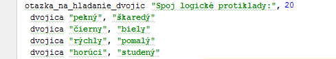

Časti jazyka - ako definovať testy
V jazyku môžeš používať niekoľko základných príkazov. V tejto časti si ich predstavíme a vysvetlíme si ich význam.
- Príkaz vytvor_test
- Príkaz otazka_s_jednou_spravnou_odpovedou
- Príkaz otazka_s_viacerymi_spravnymi_odpovedami
- Príkaz otazka_s_volnou_odpovedou
- Príkaz otazka_na_hladanie_dvojic
- Príkaz spusti_test
Príkaz vytvor_test
Príkaz vytvor_test je základný príkaz, ktorý vytvorí samotný test. Tento príkaz napíšeš v jednom súbore len raz, a to hneď na začiatku (za príkazom require_relative). Príklad použitia tohto príkazu môžeš vidieť na nasledujúcom obrázku. Napíšeš slovo vytvor_test a potom uvedieš jeho parametre oddelené čiarkami (prvý parameter je názov testu, druhý minimálny počet bodov na prejdenie).

Za týmto príkazom uvádzaš pomocou nasledujúcich príkazov zoznam otázok (otázky sú od seba opäť oddelené čiarkou), ktoré majú v teste byť.
Príkaz otazka_s_jednou_spravnou_odpovedou
Príkazom otazka_s_jednou_spravnou_odpovedou vytvoríš novú otázku, ktorá má len jednu správnu odpoveď (viď príklad na nasledujúcom obrázku):
{kind=link}
Otázka s jednou správnou odpoveďou sa definuje nasledovným príkazom (prvý parameter je text otázky, druhý počet bodov za otázku):

Po použití tohto príkazu môžeš použiť príkazy spravna_odpoved a nespravna_odpoved na definovanie zoznamu odpovedí, ktoré sa pri tejto otázke majú zobraziť.
V rámci tejto otázky sa však môže definovať iba jedna správna otázka. Naviac otázka musí mať definovanú aspoň jednu nesprávnu odpoveď.
Všimni si, že pred tento príkaz som dal medzeru, takže je viac "odsadený" ako je príkaz test. To nie je povinné, ale pomáha mi to uvedomovať si, že táto otázka je podradená tomu testu, že do neho patrí. Odporúčam ti, aby si robil to isté, vďaka tomu sa budeš vedieť v tom teste ľahšie orientovať.
Príkaz otazka_s_viacerymi_spravnymi_odpovedami
Príkazom otazka_s_viacerymi_spravnymi_odpovedami vytvoríš novú otázku, ktorá má viacero správnych odpovedí (viď príklad na nasledujúcom obrázku, ako môžeš vidieť, dá sa vybrať viacero odpovedí):
{kind=link}
Príklad definície takejto otázky môžeš vidieť na nasledujúcom obrázku (prvý parameter je text otázky, druhý počet bodov za otázku):

V rámci tejto otázky musíš definovať aspoň jednu správnu otázku a aspoň jednu nesprávnu. Bodovanie funguje nasledovne. Za vybratie každej správnej odpovede dostaneš podiel zo všetkých bodov za danú otázku (napr. ak počet bodov za otázku je 9, a má 3 správne odpovede, za každú z nich dostaneš po 3 body). Avšak ak vyberieš aj nesprávnu odpoveď, počet bodov za danú otázku sa ti vynuluje.
Príkaz otazka_s_volnou_odpovedou
Príkazom otazka_s_volnou_odpovedou vytvoríš novú otázku, v rámci ktorej je potrebné odpoveď uhádnuť a napísať ju do políčka (viď príklad na nasledujúcom obrázku, ako môžeš vidieť, odpoveď sa vpisuje do textového políčka):
{kind=link}
Príklad definície takejto otázky je nasledovný (prvý parameter je text otázky, druhý počet bodov za otázku, tretí je samotná odpoveď):

V rámci tejto otázky sa definuje iba jedna správna odpoveď - viď príklad.
Príkaz otazka_na_hladanie_dvojic
Príkazom otazka_na_hladanie_dvojic vytvoríš novú otázku, v rámci ktorej je potrebné určiť správne kombinácie dvojíc (ako môžeš vidieť, pre každú hodnotu naľavo potrebuješ vybrať správnu hodnotu napravo):

Príklad zápisu príkazu:
{kind=link}
V rámci tejto otázky sa nedefinujú odpovede - uvádzaš iba páry, ktoré je potrebné vyskladať. Tie sa uvádzajú pomocou príkazu dvojica.
Tento typ otázky sa boduje nasledovne. Za každý správne určený pár získaš podiel zo všetkých bodov. V našom príklade sú 4 dvojice dokopy za 20 bodov, to znamená za každú správne určenú dvojicu získaš 5 bodov (lebo 5 bodov krát 4 otázky je 20 bodov).
Príkaz spusti_test
Príkazom spusti_test ukončíš definíciu testu. Tento príkaz slúži na skontrolovanie definície (či si nespravil nejaké chyby), a ak sa chyby nenájdu, vďaka tomuto príkazu sa test spustí v internetovom prehliadači, kde sa s ním môžeš pohrať. Príkaz nemá žiadne parametre.
{kind=link}